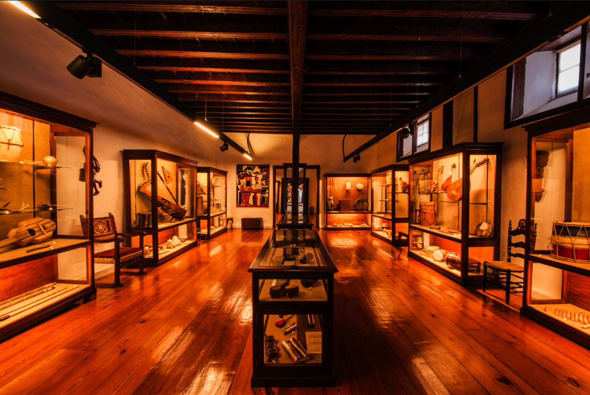
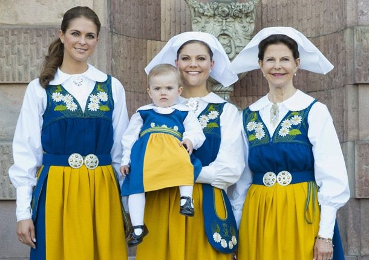
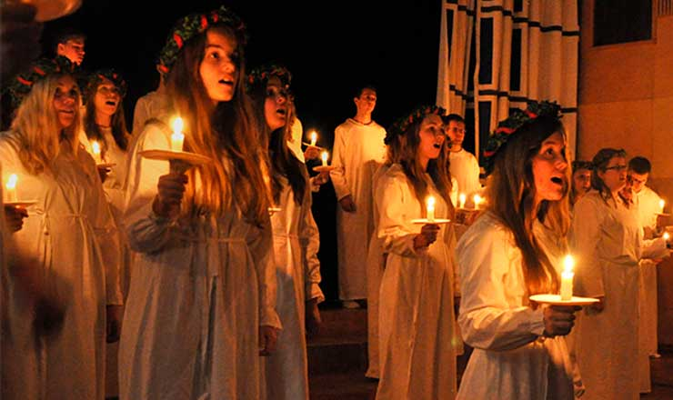

| Index |
Culture |
Nature |
Gastronomy |
Deports |
Culture |
| wedish culture is shaped by nature, equality, and balance. It reflects a society that values fairness, respect, and cooperation, where people aim to live in harmony with others and the environment. Traditions, daily life, art, and food are influenced by the changing seasons and a strong connection to nature. Overall, the culture of Sweden is known for its simplicity, sustainability, and high quality of life. |
| Values and mindset |
Swedish culture values equality, balance, and respect. People prefer consensus over authority, avoid showing off, and follow the idea of lagom, meaning moderation in all areas of life. Independence, trust, punctuality, and respect for personal space are important, as well as a strong commitment to sustainability and care for nature. |
 |
| Art,music, design |
Swedish art and design focus on simplicity, functionality, and sustainability. Design is usually minimalist, with clean lines, natural materials, and practical use in everyday life. Art often reflects a close connection to nature, light, and social themes. This style is internationally known through brands like IKEA, showing how Swedish design combines beauty with usefulness and accessibility. |
 |
| traditions |
Swedish traditions are closely connected to nature, seasons, and light. One of the most important celebrations is Midsummer, which marks the summer solstice with dancing, flowers, and traditional food. Lucia Day, celebrated in December, brings light to the dark winter through songs and candle processions. Christmas is a warm, family-centered celebration with special foods and decorations. Overall, Swedish celebrations are usually simple, meaningful, and focused on togetherness. |
 |
| Clothes |
Traditional Swedish clothing, known as folkdräkt, consists of regional folk costumes that share common features across the country. For women, it typically includes a white blouse, a fitted bodice, a long skirt, an apron, a shawl, and silver jewelry, while men usually wear a white shirt, a vest, knee-length trousers, long socks, black shoes, and sometimes a hat. The colors, patterns, and embroidery vary by region and historically indicated a person’s origin or marital status. Today, these traditional outfits are mainly worn during cultural celebrations and festivals, especially Midsummer and national holidays in Sweden.
|
 |
| Religion |
Religion in Sweden is characterized by a historically Lutheran background and a very secular modern society. The majority of Swedes are formally members of the Church of Sweden, an Evangelical Lutheran church, but regular religious practice is low. Freedom of religion is guaranteed, and there are minority communities including Muslims, Catholics, Orthodox Christians, Jews, and Buddhists. Today, religion plays a limited role in daily life for many people, with cultural traditions often being more significant than religious belief. |
 |